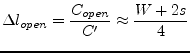
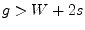
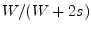
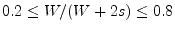
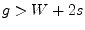
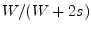
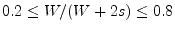
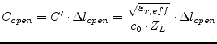

![\includegraphics[width=0.6\linewidth]{cpopen}](img2488.png)
|
The behaviour of an open circuit as shown in fig. 12.3 is very similar to that in a microstrip line; that is, the open circuit is capacitive in nature.
A very simple approximation for the equivalent length extension
 associated with the fringing fields has been given by
K.Beilenhoff [54].
associated with the fringing fields has been given by
K.Beilenhoff [54].
|  | (12.27) |
For the open end, the value of  is not influenced
significantly by the metalization thickness and the gap width
when
. Also, the effect of frequency and aspect ration
 is relatively weak. The above approximation is valid for
.
is not influenced
significantly by the metalization thickness and the gap width
when
. Also, the effect of frequency and aspect ration
 is relatively weak. The above approximation is valid for
.
The open end capacitance can be written in terms of the capacitance per unit length and the wave resistance.
|  | (12.28) |